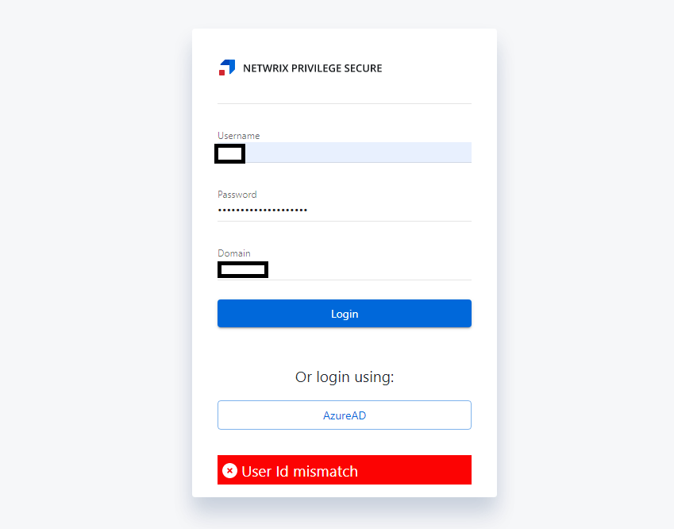

Summary
When logging into the Privilege Secure console, you may receive a "User Id Mismatch" response that prevents login. This is caused when there is a mismatch between a Privilege Secure user stored in a cookie, and the user attempting login. Generally this is caused when multiple sessions are being launched from the same browser using different users.
Instructions
- Log out of all active Privilege Secure sessions.
- Clear your browser's cookies.
- Reattempt login using your desired account. You should now be able to successfully log in.